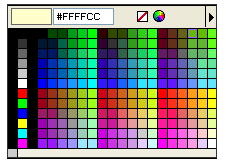

Lesson 1: Basic Shapes and Colors
Overview
In this lesson, you will be introduced to the drawing tools and shown how to make basic shapes. You will then be shown how to select colors, using both a color palette and an eyedropper tool. Next, you will keep track of the colors you use by recording their hexadecimal values and will also be introduced to the concept of transparency. Finally, you will create a basic shape with a transparent background and then fill the shape with a desired color. Your instructor will provide software-specific instruction of concepts and tools either through demonstration or by providing tutorials.
Learner Outcomes
At the completion of this exercise, you will be able to:
- utilize the shape tools to make a basic shape and fill it with color.
- select colors using the color palette.
- use the eyedropper tool to capture color from objects or pictures.
- utilize hexadecimal values to maintain consistency in color use.
Activities
- Create a new project in your graphics software and choose the background color to be set as transparent. A transparent background typically indicated by a pattern of gray and white squares as shown below.
- The instructor will demonstrate how to use the shape and line tools to create basic shapes. Spend some time experimenting with drawing different shapes and designs until you become familiar with the tools. Below are some examples of basic shapes that are provided in most graphics programs. Some programs also offer more advanced custom shapes such as arrows and other symbols.
- Now that you have experimented with drawing simple shapes, create a new document in your image editing software. Set the image size at 75 pixels in width and 75 pixels in height. Make sure the background is transparent. Then, locate the rounded rectangle tool and draw a shape that fills up the image canvas, leaving a small amount of space between the shape and the edges. When using the rounded rectangle tool, you can set the corner radius to change the shape. A larger corner radius will give you a rectangle with more curve to the corners. Start with a simple shape for now and then you can work on a more complex design later if you wish. Below is an example of a button shape we will use for this lesson:
- Once you have created your basic button shape, the instructor will demonstrate how to use the color selection tools for the graphics program. To select a color, open up the color palette and select the color you wish to use. A standard color palette will look something like the example below. You should experiment with changing the color of their button shape.
- Hexadecimal ("hex") values are a common way to identify
colors on the web and in graphics programs. A hex color code consists
of the # sign followed by a combination of six leters and numbers. For
example, the hex color code for white is #FFFFFF, and the hex color
code for black is #000000. This code can be broken down as follows:
- Each pair of letters/numbers represents one color, grouped in the following sequence: Red, Green, Blue (RGB)
- The hexadecimal (base 16) counting system includes the numbers 1-9, followed by the letters A - F. The lowest number in hex is 0, the highest is F.
- Colors are attained by mixing various amounts of Red, Green, and Blue.
- To attain pure red, you use maximum red (FF), but don't mix in any green (00) or blue (00). So, the hex code for red is #FF0000.
- To attain purple, you mix equal amount of red and blue, but leave out the green. A very light shade of purple (pink, really) can be attained with #FF00FF, whereas for a darker shade of purple you could use #660066.
- It is a good idea to keep track of the hexadecimal number for the common colors you use in your graphics and web pages. Doing this will allow you to always use colors that are consistently the same throughout your work.
- Another way to choose colors in your graphics software is
by using the eyedropper tool
 .
To use the eyedropper tool, simply click with the eyedropper on any
object on the page. The color of that object will then become the
active color in the color palette.
.
To use the eyedropper tool, simply click with the eyedropper on any
object on the page. The color of that object will then become the
active color in the color palette. - The gradient feature is a common feature in graphics
programs that lets you fill objects or backgrounds with a combination
of colors that fade into one another. Applying gradients allows you to
create a number of different effects that can make even simple shapes
more artistic and appealing. Gradients are applied differently in
different applications. Some programs use a gradient tool, and some
programs allow you to apply gradients directly to objects, layers, or
text. Your instructor will demonstrate how to apply a gradient in the
software program you are using. You should then experiment by applying
different gradient types to their button shape. Below is an example of
how a gradient has been applied to our basic button shape.
- Create your own button and add color to it. Save your work. You'll be utilizing this button in the next lesson.


Resources/Online Documents
All done?
Make sure to save your basic button shape. You will be using this shape in the next lessons to finish your sample navigation buttons. When finished, proceed to the next lesson.